Analysing Diversity and Inclusion in OpenStreetMap’s Tagging Proposals Process
Centre for Interdisciplinary Methodologies (University of Warwick)
State of the Map 2026 | Paris, 29th August 2026
Dr. Carlos Cámara-Menoyo
Principal Research Software Engineer,
Centre for Interdisciplinary Methodologies, University of Warwick (UK)
carlos.camara@warwick.ac.uk | Fedi: @ccamara@scholar.social
At OSM:
I’m ccamara, OSM contributor since 2011
From very active to almost inactive. Mostly tagging accessibility, buildings
Led mapping parties and Humanitarian OSM with Collaborative Mapping and some import initiatives with OSM’s Spanish and Catalan local chapters.
Can Digital Goods Be Neutral?
Evaluating OpenStreetMap’s equity through participatory data visualisation
The foundations of this work reside on the collaborative work made with an amazing team:
UNIVERSITY OF WARWICK
Dr. Carlos Cámara-Menoyo (PI)
Dr. Timothy Monteath (Co-I)
Hazel Cyril, Lilly Makkos (RAs)
GEOCHICAS
Dr. Selene Yang
Silvia Rivera Alfaro
Alejandra Canclini
ADVISORY GROUP
Dr. Jorge León (Universidad de Zaragoza)
Dr. Rachel Palmen (Universitat Oberta de Catalunya)
This project was funded by the ESRC Digital Good Network, through their Research Fund 2024-25.
There’s a long history of maps and power (Crampton 2009; Harley 2008; Wood 1992)
Critical and Feminist Geography have critiqued map’s objectivity:
Flagging (unconscious) bias by map-makers (usually men) (Monk and Hanson 1982)
Challenging positivist approaches and based exclusively in quantification (Pickles 1995)
Importance on what is being presented and silenced (Pavlovskaya 2009; Kwan 2002; d’Ignazio and Klein 2020)
More than representations: cultural expressions (Turnbull and Watson 1989)
The emergence of neogeography (Turner 2006), Volunteered Geographic Information (Goodchild 2007), and particularly, OSM as an opportunity to address those issues (Haklay et al. 2008):
No longer for/by elite: Anyone can create their own maps
Opportunity to include a myriad of different worldviews
Yes, but…
The lack of diversity in the community is still a concern, as flagged by:
Dialogues with prior scholarly on gendered uses of space and contributions to OSM.
Aims:
Assess if this issue is still present in 2026 and in other types of contributions.
Implement a reproducible, computational workflow that allows for replication in the future.
Foster discussions towards making OSM more inclusive and equitable.
We do so by studying every tagging proposal being documented since 2006.
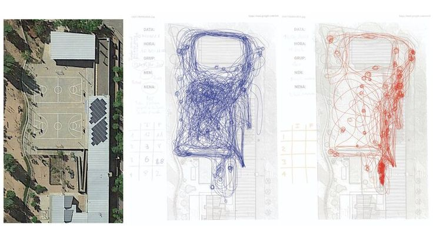
Previous research on OSM Contributions focuses on map contributions (i.e. changesets) only, a particular type of contributing.
We will be embracing pluralism by focusing on tagging proposals:
proposals: a dataframe of every tagging proposal, consisting of 2,115 rows and 30 columns.votes: a dataframe of every vote cast, consisting of 8,511` rows and 5 columns.Methods: Data Gathering and cleaning:
Data Gathering: API Query (MediaWiki) +
Web scrapping
Data cleaning: filtering right types of content, values extraction, formatting…
Documentation
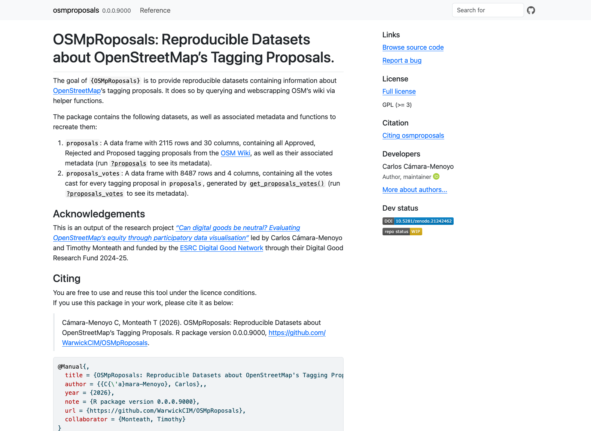
The package (Cámara-Menoyo 2026) is in early stages of development. Contributions are welcome! (especially to improve efficiency/speed and testing)
Todo:
Features were automatically classified as perceived as “feminised,” “masculinised,” or “not gendered” (i.e., belonging to neither category) based on the presence of keywords in their titles and descriptions:
| Feminised features | Masculinised features |
|---|---|
|
|
This classification refers to how these features are usually perceived, without implying any judgement.
A way to overcome the limitation of not having a census or other official ways to quantify demographics/diversity
Based on prior scholarship examining the gendered dimensions of spaces and infrastructures (Das et al. 2019; Kern 2020; Leszczynski and Elwood 2015; Stephens 2013), and gender performativity theory (Butler 2011).
Authors are aware of theoretical limitations due to a binary approach + risks of reinforcing role genders that we do not endorse.
Happy to discuss this.
Note that they are preliminary results!
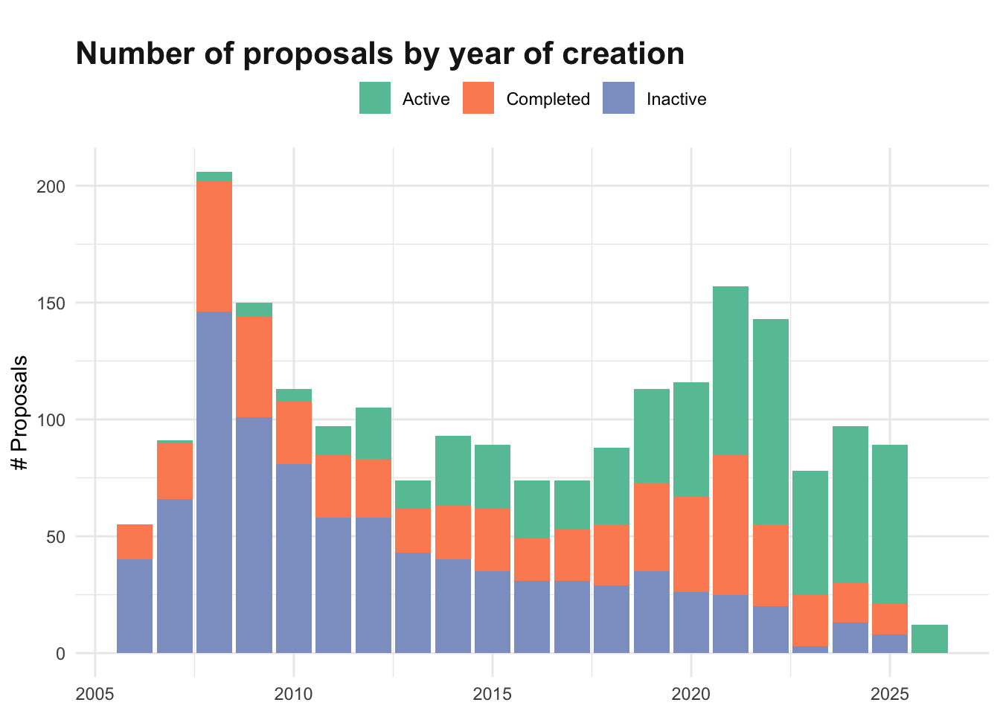
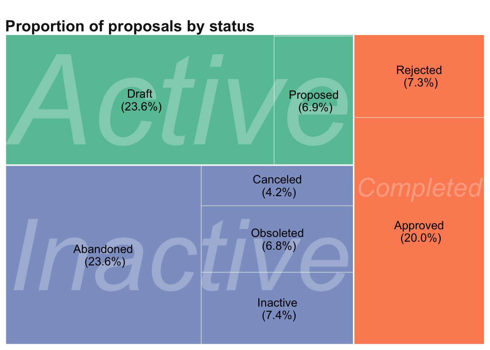
Only 982 different users have ever created a tagging proposal (only 0.009% of total OSM users).
Creating proposals is vastly (99%) an individual endeavour.
Most users only engage once with this process. 50% of the total proposals have been created by users who have only submitted one or two proposals.
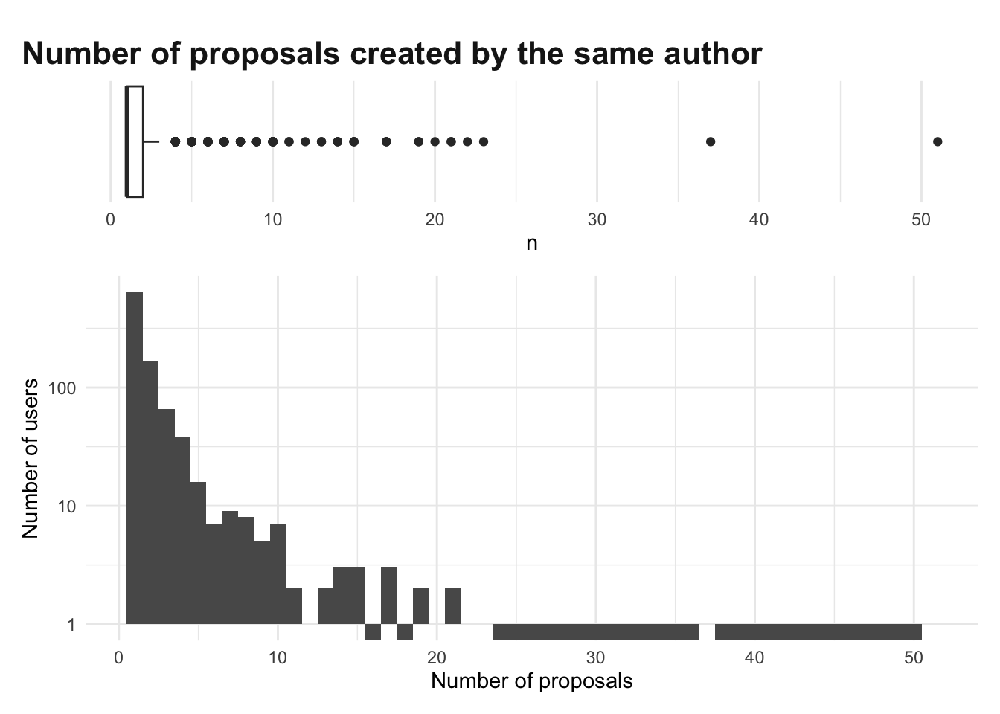
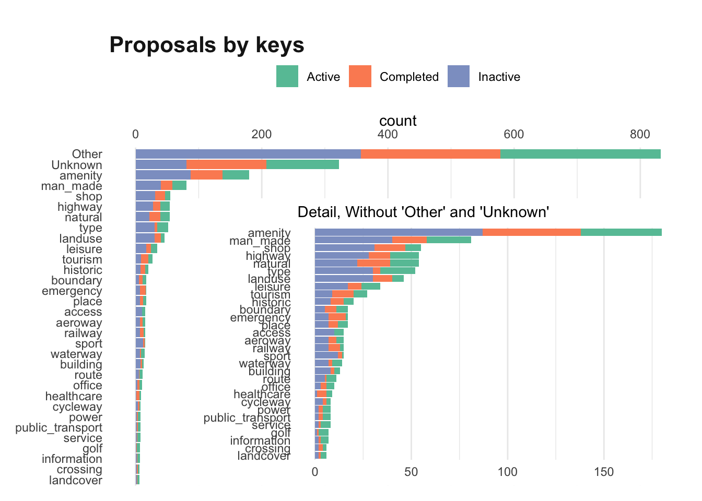
based on language:
Based on gender performativity’s perception:
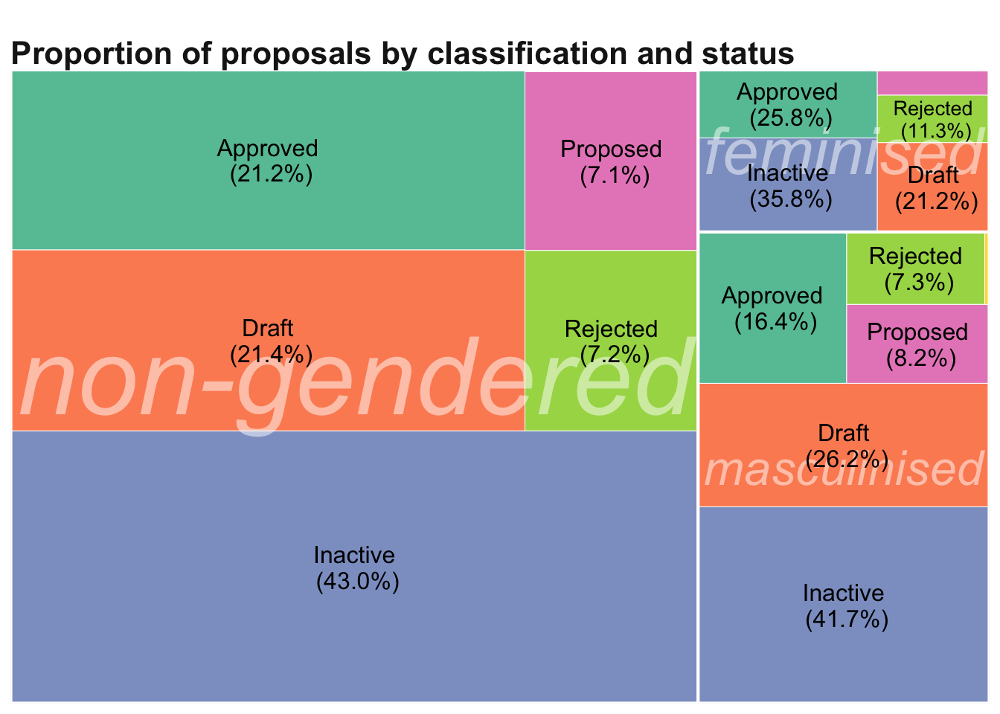
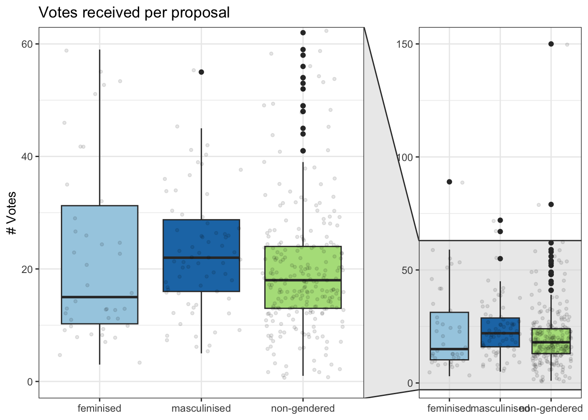
Feminised features’ median of votes is the lowest: in line with prior research flagging how they receive less attention. But..
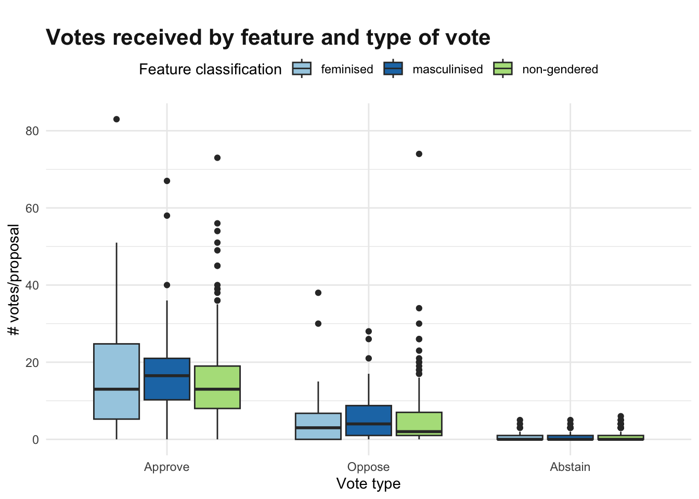
Feminised proposals receive less approval votes, but also less opposing votes than any of the other categories.
Proposals not reaching the voting threshold (8 positive votes) are minority but notably different: 9 feminised proposals (5.9% of the category) vs 10 masculinised (2.2%)
Niche and privileged contribution type:
Not many users are compelled to undertake a significant amount of work with low success ratio (20%) + elevated exposure. Even fewer ever repeat.
Only attractive users with time, proficient in English, and willingness to exposure and criticism. This maps well to white, heterosexual, cis, men from English-speaking countries.
Reduced number of feminised tagging proposals + reduced votes + higher % failing to meet threshold= lack of interest in these contributions. But…
The combination of both suggests that OSM reproduces hegemonic worldviews.
Enough of me, now it’s your turn!
What stories and realities are not captured (methodology –data, classification- , analyses…)
Governance vs techno-optimism: How to make this process more appealing:
Echo or challenge findings + Questions and clarifications
Please, allow people from under-represented demographics to open the discussions.
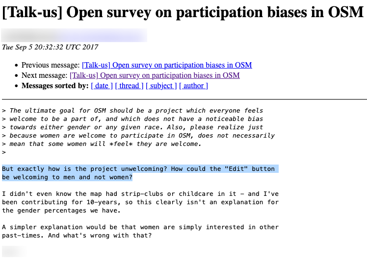
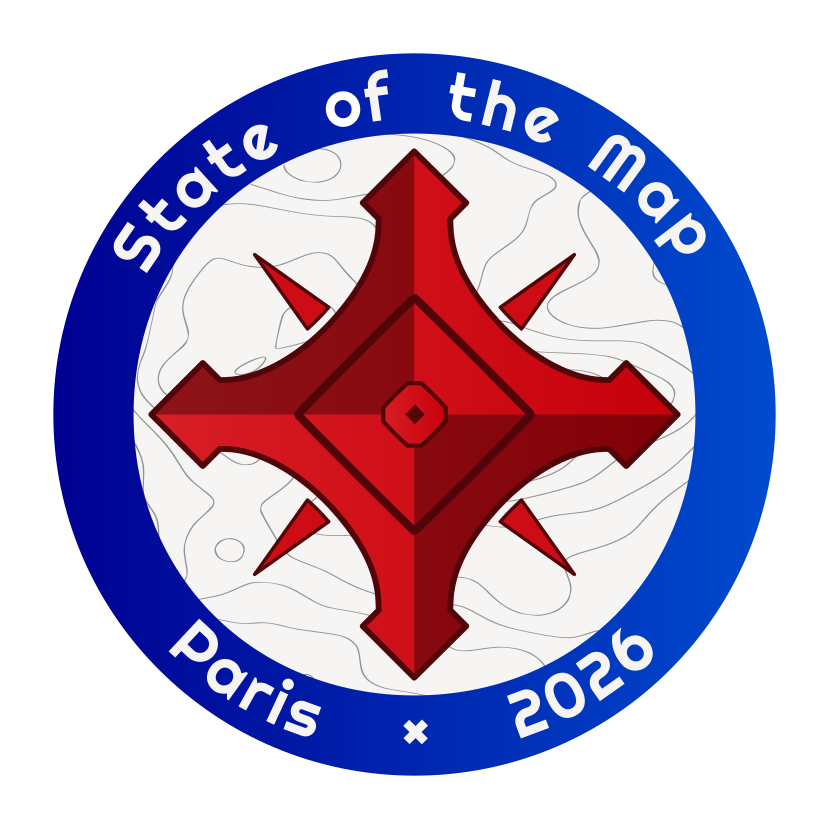
Whose Knowledge Counts?